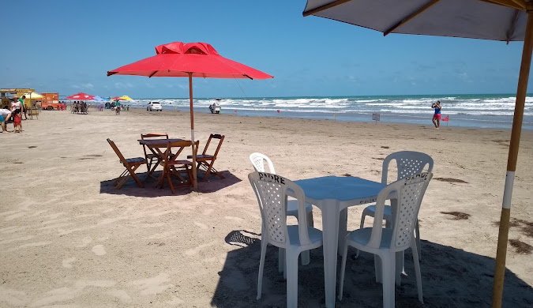

Piauí é um estado no nordeste do Brasil conhecido pelos parques nacionais. O Parque Nacional Serra da Capivara, no sudeste, possui sítios arqueológicos com pinturas rupestres pré-históricas. Nas proximidades, o Parque Nacional Serra das Confusões tem gigantescas formações rochosas e grandes áreas de caatinga (vegetação semiárida), onde vivem aves em risco de extinção. As mangueiras ladeiam as ruas da capital à beira-rio, Teresina.
